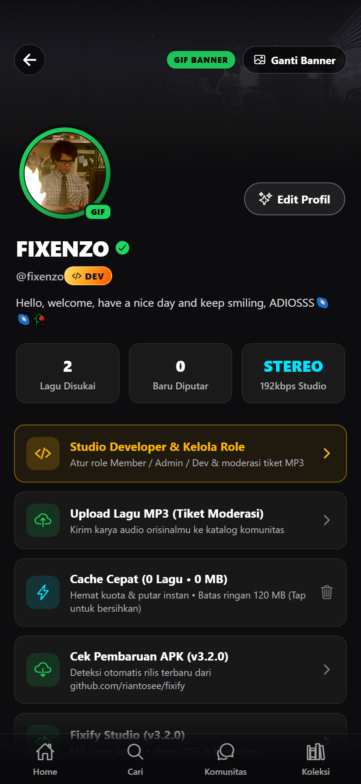
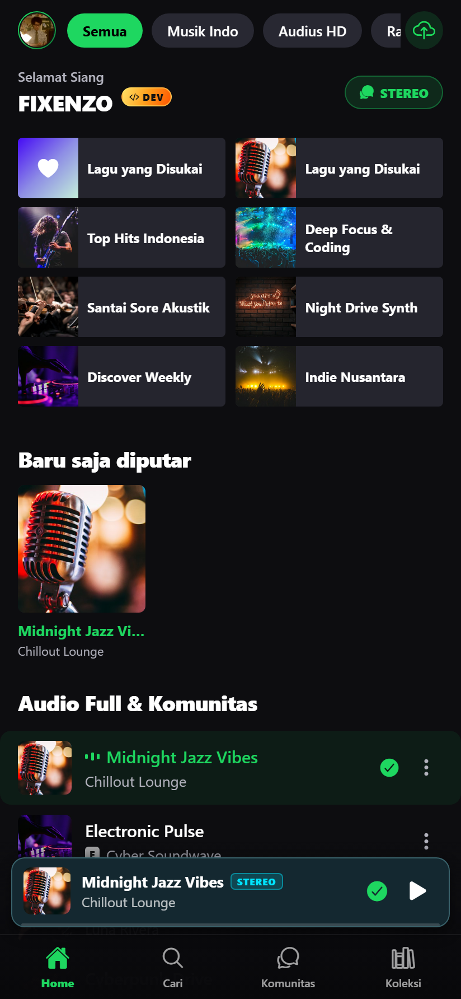

Pemutar musik Android.
Bebas iklan. Tetap menyala
saat layar mati.
Dibangun untuk pengalaman dengar yang tenang dan cepat — audio native di latar belakang dengan kontrol layar kunci, pemrosesan Stereo Studio 192kbps, cache lagu otomatis, serta ruang obrolan dan playlist komunitas.
- IKLAN
- 0% Selamanya
- AUDIO ENGINE
- Stereo DSP 192k
- CACHE LOKAL
- Auto-LRU 120 MB
- PEMBARUAN
- Auto-Update


01 — TANGKAPAN LAYAR ASLI
Lihat langsung isi aplikasinya sebelum mengunduh.
Seluruh gambar di bawah diambil langsung dari aplikasi Fixify v3.2.0 — tanpa rekayasa ilustrasi, lengkap dengan tampilan gelap, badge role, dan kontrol stereo.
02 — ARSITEKTUR AUDIO
Stereo Studio DSP tanpa merusak kejernihan.
Pemrosesan stereo dikerjakan di server menjadi 192kbps Dual-Channel MP3 dengan dukungan HTTP 206 Range Seeking dan disimpan otomatis di cache perangkat.
stereotools=slev=1.65 → extrastereo=1.75 → bass(+2.5dB) → treble(+2.5dB) → alimiter(0.95)
Memperlebar pemisahan kanal kiri-kanan dengan limiter anti-clipping agar instrumen terasa luas di earphone maupun speaker.
03 — KAPABILITAS INTI
Semua yang penting, tanpa fitur yang membebani.
Audio Latar Belakang & Lockscreen Native
Tidak memakai WebView video. Seluruh lagu dialirkan lewat mesin audio native Android sehingga tetap berputar stabil saat layar dimatikan, pindah aplikasi, atau membuka game.
Cache Dua Lapis yang Ringan
Daftar lagu, playlist, dan pencarian disimpan di cache lokal agar halaman terbuka instan. Setiap lagu yang diputar otomatis di-cache hingga batas ringan 120 MB (30 lagu) dengan pembersihan otomatis LRU dan tombol bersihkan di Profil.
Komunitas Live & Playlist Kolaborasi
Ngobrol di channel # Umum, # Berbagi Lagu, dan # Santai,
kirim kartu lagu yang bisa diputar 1 ketukan, serta bangun playlist publik bersama member lain.
Daftar Bebas & Sistem Role Terstruktur
Pendaftaran akun terbuka tanpa kode undangan. Mendukung peran DEV, ADMIN, dan MEMBER dengan moderasi tiket MP3 & pengelolaan role langsung dari dalam aplikasi.
Deteksi Update Otomatis dari GitHub
Setiap kali rilis baru dipublikasikan di riantosee/fixify atau
version.json diperbarui, aplikasi menampilkan notifikasi update beserta
catatan perubahan dan tautan unduhan APK terbaru.
RILIS RESMI TERBARU
Fixify v3.2.0
- Auto-Update Detector memantau GitHub Releases dan
version.jsonsecara otomatis. - Pendaftaran akun terbuka tanpa kode undangan dengan pesan validasi yang jelas.
- Sistem cache ringan untuk respons API dan file audio setiap lagu (auto-LRU maks. 120 MB).
- Fixify Stereo Studio DSP: Stereo Wide HD, 3D Spatial, Deep Bass, dan Crystal Vocal.
- Komunitas Live, berbagi kartu lagu playable, playlist bersama, dan sistem role.
PANDUAN INSTALASI
Pasang di Android dalam 3 langkah
-
01
Unduh file APK resmi
File diambil langsung dari GitHub Releases
riantosee/fixifytanpa tautan perantara. -
02
Izinkan instalasi APK
Buka file
Fixify-v3.2.0.apkyang terunduh lalu izinkan pemasangan dari browser kamu. -
03
Buat akun & mulai dengar
Daftar langsung tanpa kode undangan, pasang earphone, dan rasakan mode Stereo Wide HD.